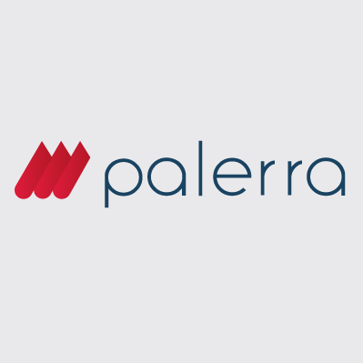
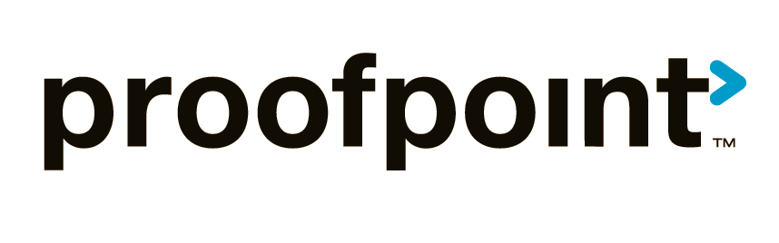
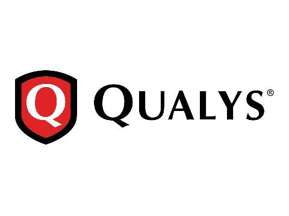

SECaaS: Security as a Service
Cloud Computing: Servicios y Aplicaciones
Curso 2016/2017
Índice
- Definición
- Servicios ofrecidos
- Ventajas y riesgos
- Principales desafíos
- Proveedores de SECaaS
- Casos destacados
- Referencias
Definición
SECaaS es un modelo de Cloud Computing basado en SaaS y especializado en dar servicios de seguridad informática a traves de internet.Servicios ofrecidos (I)
Segun la CSA (Cloud Service Alliance) existen las siguientes categorias de servicios:
- Gestión de identidades y accesos (IAM): firma electrónica, web-SSO (Single Sign-on), gestión y provisión de tokens de autenticación...
- Prevención de perdida de datos (DLP): encriptación de datos transparente, gestión de políticas de acceso...
- Seguridad web: filtrado web, anti-virus, monitorización web, anti-phishing, análisis de vulnerabilidades web...
- Seguridad de correo electrónico: filtros de spam, encriptación de emails, escaneo de los contenidos...
Servicios ofrecidos (II)
- Evaluación de la seguridad: auditorias de servicios cloud basadas en estanards, tests de penetración, valoración de riesgos de seguridad...
- Gestión de intrusiones: usando patrones de reconocimiento para detectar y reaccionar a eventos inusuales, sistemas en tiempo real para detectar o preveer una intrusión, inspección de paquetes...
- Gestión de información de seguridad y eventos (SIEM): Análisis de logs con sistemas en tiempo real para la creación de informes y alerta ante indicendes de seguridad
Servicios ofrecidos (III)
- Encriptación: VPN, encripcación de comunicaciones, firmas digitales, integridad y validación de mensajes...
- Continuidad de negocio y recuperación ante desastres: medidas diseñadas para asegurar que el servicio se mantenga en caso de fallos, cloud backup, data center alternativo, replicación de datos...
- Seguridad de redes: firewall, proteccion DDoS, integración con los hiper visores...
Ventajas y riesgos (I)
- Menores costes: al facturarse por tiempo y recursos usados realmente.
- Actualizaciones automaticas de software y definiciones de virus: ya que son realizadas por proveedor y llegan automaticamente a todos los clientes, algo muy importante en el mundo de la seguridad.
- Delegación de la seguridad: lo que permite a las empresas centrarse en ofrecer sus productos.
Ventajas y riesgos (II)
- Efecto dominó: en caso de que se descubra una vulnerabilidad en un servicio esto puede llevar a un efecto dominó debido a la amplia escala de los entornos cloud.
- Naturaleza compartida: existen muchos clientes que quieren soluciones personalizadas y esto no es habitual en servicios SaaS.
- Soluciones generales: el usar soluciones centralizadas reduce la capacidad de los clientes de personalizar estas y puede forzar a los clientes a adaptarse para adecuarse a sus servicios SECaaS.
Principales desafíos
Crear un framework o estandar internacionalmente aceptado que incluya unas especificaciones mínimas.
Mantener una reputación de mayor fiabilidad respecto a las soluciones estandar no cloud.
Proveedores de SECaaS (I)
Palerra: Empresa conocida por ofrecer software de tipo cloud access security brokerage, suites integradas de seguridad en el entorno SECaaS.
Su solución permite la detección de intrusos, el análisis predictivo, gestión de la configuración y respuesa a incidentes. Está integrada en numerosos servicios de nube como AWS, Salesforce o Github.
Proveedores de SECaaS (II)
Okta: Se centra en la gestión de identidad y acceso (IAM), destaca su producto Single Sign-on que permite a sus usuarios acceder a todas sus aplicaciones cloud o web con solo unos credendenciales de usuario. Además de esto permite la integración con AD/LDAP (directorios remotos).
Su precio es de 2 $ al mes por usuario.
Proveedores de SECaaS (III)
Proofpoint: Basa su negocio en ofrecer proteccion email, afirman proteger contra malware, spam o phishing. En su SLA garantizan bloquear el 99,999% del spam y el 100% de la detección de malware. Utilizan detección basadas en firmas.
Su software permite la creación de informes, politicas personalizadas, grupos de usuarios, seguridad en redes sociales...
Proveedores de SECaaS (IV)
WhiteHat Security: Esta empresa se centra en la seguridad web y de aplicación, ofrecen servicios SaaS para realizar test de seguridad dinámicos o estáticos.
Además ofrecen consultoría personalizada para ayudar a resolver las vulnerabilidades encontradas con su herramienta.
Proveedores de SECaaS (V)
Qualys: este proveedor ofrece una suite integrada para la seguridad de redes. Respecto a las areas funcionales permite la monitorización continua, gestión de vulnerabilidades, escaneo web, firewall software para aplicaciones web, escaneo y monitoreo de dispositivos conectados...
Para llevar a cabo estas funciones se sirve de sensores fisicos y agentes ligeros.
Casos destacados
Referencias
- Techopedia, Security as a Service (SecaaS or SaaS)
- SVT Cloud, SECaaS o Seguridad como Servicio: no solo para las grandes empresas
- CSA (Cloud Security Alliance) (2011), Defined Categories of Service
- Aleks Peterson (2016), Top 5 Security-as-a-Service Providers
- Tripwire (2016), 3 Reasons Why Your Organization Should Consider Security as a Service (SECaaS)
- CCSK Guide (2011), Security as a Service (SecaaS)
- Wikipedia (2017), Security as a service